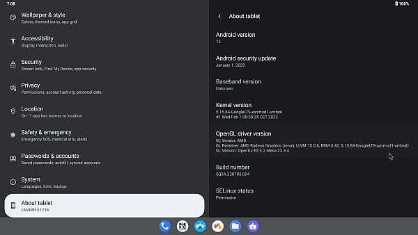

BlissLabs / Open source
Public images are paused while the next Bliss OS tree is built. The source is still moving.
Over the last year, BlissOS, BlissRoms-x86, Android-Generic, Ānanda Āropa, and Bliss-Bass have been in active development. We need people who can write code, rewrite docs, and test hardware, and we need people who can spare build servers, storage, and devices.

Bliss OS is a set of repositories. These are the projects behind the next release. Pick the one that matches what you can do.
The Android-on-PC operating system: manifests, frameworks, generic device trees, and desktop-oriented work. This is the product most people know as Bliss OS.
Rapid prototyping, kernels, and build tooling for Android on x86. AG is how a lot of Bliss OS and related images get configured and brought up.
The new initrd and installer stack: Devuan-based live environment, Calamares, and a rewritten boot path. Smaller than a full AOSP tree, so it is a good place for a first patch.
Bass-funded Lineage OS tree for x86_64, and the base for Bass: Lineout builds (tablet, desktop, TV, and auto). Android 16 is in los-tv-x86. A public Android 14 Bass fork is listed with it for reference only.
The layer you actually click: Boringdroid (freeform windows and taskbar in AOSP), Smart Dock (desktop launcher), and XTMapper (keyboard and mouse mapping). BlissLabs projects, developed as their own apps and patchsets. New apps and ideas are welcome too.
Boringdroid, Smart Dock, XTMapper
Propose an app or component
See the full project map, including apps, Bass: Lineout, Bass: Submix, and Bass →
You do not need to build AOSP on day one. Pick the path that matches what you can give.
Platform, kernels, Mesa, installer, desktop apps, device trees, and tooling. Development chat is open even while general user support stays limited.
Contributor guideThe next tree makes the old documentation obsolete. We need writers, VM and bare-metal testers, and people who can file useful hardware reports.
Docs & testingAOSP-on-PC does not ship without disk, RAM, and bandwidth. Lend a build runner, host a mirror, sponsor storage, or send test hardware.
Lend a machineWe paused public images so we could change the tree instead of shipping another incompatible ISO with stale docs. That work is underway. There is no public ETA for the first new official image.
Bass OS, from Navotpala Tech, is commercial Android for devices: x86_64, ARM, Raspberry Pi, kiosks, and VirtIO. BASS is Broad Apparatus Support System; editions use audio names (Lineout, Submix, and others) as a play on that acronym. It is Google-free by default and meant to be branded onto hardware. It is not a substitute for public Bliss OS desktop ISOs.
That work also feeds the commons. Bass: Lineout Core is the Bass-funded Lineage OS tree for x86_64, and the base for Bass: Lineout builds (tablet, desktop, TV, and auto). Android 16 lives in los-tv-x86, including the Mesa fork used in current BlissOS and Android-Generic builds. Bass: Submix is a Debian host with a Wayland compositor running Lineage OS / Android in a Waydroid LXC container; source is in bass-submix.
Bass OS Open-source Bass workThere is no current official ISO from the new tree. Archived Bliss OS images on SourceForge are snapshots: no updates, no support, and they will not OTA to what we are building now.
Archive downloads and warnings →General user support on Telegram and Discord was paused with the public releases. If you want to help build the next one, start on Matrix or the development Telegram, and read the contributor guide.
#blissos:matrix.org / t.me/androidgenericpc / Contribute© 2026 BlissLabs